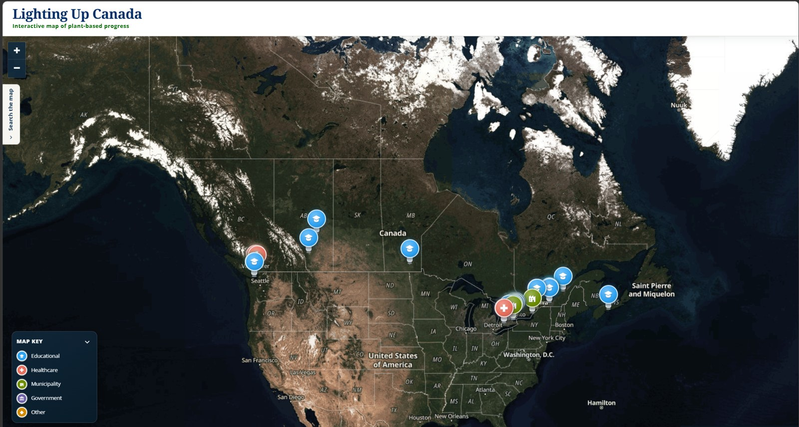
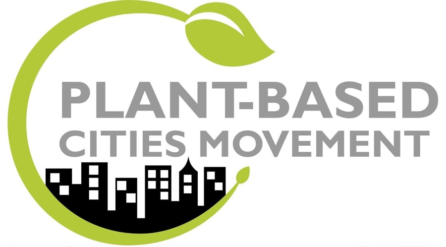

Lighting Up Canada Review Backend
SOFTWARE & SYSTEMS INTERN, PBCM · JUNE 2026 – AUG 2026, REMOTE

About
A Google Sheets and Apps Script backend I designed for Plant-Based Cities Movement's public initiative-tracking map, built around one constraint: AI could research at scale, but only a human reviewer could ever publish a record.
Tools
Google Apps Script, Google Sheets, JavaScript, Leaflet, GitHub Pages, prompt design

What this is
PBCM wanted a national map of plant-based food initiatives across Canadian institutions: universities, hospitals, municipalities, government agencies. Finding and verifying hundreds of institutions across ten provinces and territories wasn't realistic by hand, so their ask was AI-driven database expansion. My job was designing and building the system that could do that without publishing something wrong.
The map, first
Week one was getting something real on screen: a first draft hosted on GitHub Pages, using Leaflet for an interactive map instead of a static image, since it's more precise and far easier to update than importing a rendered PNG. That version shipped with a search bar, a category sidebar, and 17 institutions. By week two the database was at 62, and I'd reworked the whole look into the dark, glowing-pin theme the map still uses, split by category: education, municipality, healthcare, government, other.
The constraint that shaped the backend
The actual problem was scaling research without losing human control over what went public. I built the system around a Google Sheet as the single source of truth, with an Apps Script web app in front of it. Every candidate institution lives in one of three states:
- Review Queue — new or flagged records, everything starts here
- Published Records — approved, exported to the live map
- Rejected Archive — rejected, kept for history instead of deleted
A reviewer opens a record and picks Proceed, Hold, or Reject. Proceed is the only path that sets Approval status to Approved, Ready for map to Yes, and Verified to Yes, and those three fields are the only thing that lets a record into the JSON export. I wrote AI out of that decision entirely: the two research prompts I built for PBCM are explicitly forbidden from ever setting those fields, no matter how confident the model is in a source.
What the AI prompts do
There are two. A discovery prompt runs quarterly and searches for Canadian institutions with documented plant-based action, not vague sustainability language or a single menu item, and checks every candidate against existing records first so it isn't proposing duplicates. It has to separate the date something was announced from the date it was actually implemented, cite a source for every claim, and route anything uncertain to a "needs clarification" state instead of guessing. An audit prompt runs on a slower cycle to catch link rot, sources that changed underneath an already-published record, and claims that quietly went stale, and it's written so it can never silently downgrade a well-sourced claim into a vaguer one or erase an old source without keeping it in history.
Getting the discovery prompt right took a few rewrites. Early versions accepted a source too easily. The version PBCM uses now has to build an exclusion list of every known name, alias, and subsidiary for an institution before it's allowed to search, so a university with three naming conventions doesn't get added three times under three different names.
Publishing
Once a record is approved, the admin site generates institutions.json directly from Published
Records, so nobody is hand-editing JSON. That file goes into the GitHub repo behind the public map and the
map picks it up automatically. The Apps Script only needs redeploying after an actual code change, not
after every review decision, which mattered once other staff started using it without me around.
Where it landed
By the end of the summer the database had grown well past the original 62 institutions, the review backend was live, and I walked PBCM's technician through the full system for sign-off, then presented it at their board meeting. I also wrote the internal documentation covering the whole workflow, spreadsheet to review to publish, so staff without any Apps Script or JavaScript background could run it themselves.